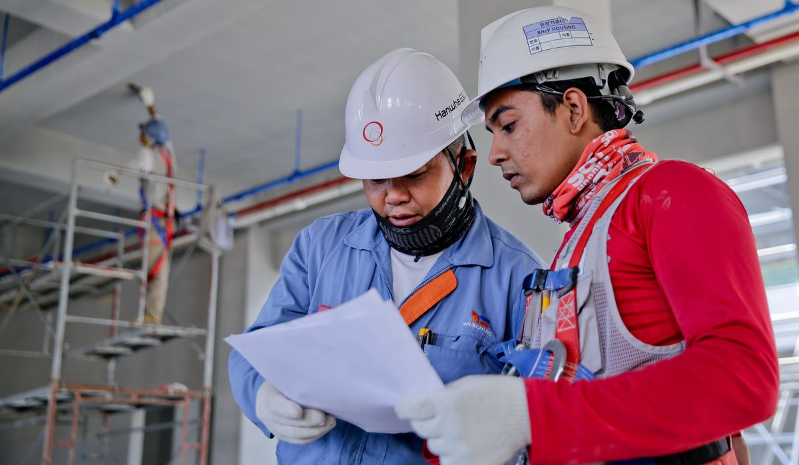
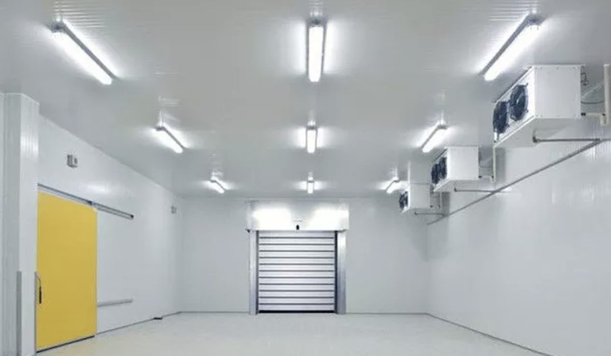

En bref
Le diplôme qui mène au métier de frigoriste climaticien est le CAP Installateur en froid et conditionnement d'air, noté 9,1/10 dans notre comparatif des parcours. Les expressions « CAP climaticien » et « CAP frigoriste » sont des appellations d'usage, elles ne correspondent à aucun intitulé officiel. Ce CAP se prépare en 12 à 18 mois à distance, de 1 090 € au CNED à 2 790 € chez L'atelier des Chefs. Il faut y ajouter l'attestation d'aptitude à la manipulation des fluides frigorigènes, obligatoire pour ouvrir un circuit.
- Le CAP Installateur en froid et conditionnement d'air est le seul CAP du froid, les appellations climaticien et frigoriste n'existent pas au répertoire des diplômes
- Comptez 400 à 600 heures de cours et 12 à 18 mois à distance, contre trois ans pour le Bac pro TFCA
- L'attestation d'aptitude fluides catégorie 1 se passe en 3 à 5 jours et conditionne toute intervention sur un circuit frigorifique
- Un frigoriste débutant démarre entre 1 950 € et 2 210 € brut par mois selon le type d'employeur
- Le tarif à distance va de 1 090 € au CNED à 2 790 € chez L'atelier des Chefs, pour une moyenne de panel de 2 340 €
Sommaire de ce comparatif
Le froid est le métier le plus tendu du bâtiment en 2026
Trois étés de suite, les installateurs ont refusé des chantiers faute de bras. Le froid a cessé d'être une niche réservée aux chambres froides de supermarché, c'est aujourd'hui le poste le plus difficile à pourvoir du bâtiment, devant l'électricité et devant la plomberie. Trois marchés montent en même temps et tirent la demande dans le même sens.
- La climatisation résidentielle a changé d'échelle depuis les canicules à répétition, les délais de pose dépassent souvent huit semaines en juin dans les grandes agglomérations
- La pompe à chaleur air-eau remplace les chaudières fioul et gaz par dizaines de milliers chaque année, et c'est un frigoriste qui la met en service et qui la dépanne
- Le froid commercial et le froid industriel ne s'arrêtent jamais, la grande distribution et l'agroalimentaire entretiennent un parc qui tourne 8 760 heures par an
À ces trois marchés s'ajoute une pyramide des âges défavorable. Une partie des frigoristes formés dans les années 1990 part à la retraite, et les sections de Bac pro ne remplissent pas leurs places. Le résultat se lit dans les annonces, où l'on voit des entreprises proposer le permis, le véhicule de service et l'attestation fluides financée avant même le premier jour.
Un candidat qui sort d'un CAP froid avec son attestation fluides reçoit en général plusieurs propositions avant la fin de sa formation. Aucun autre métier du bâtiment n'affiche ce rapport entre le nombre de diplômés et le nombre de postes ouverts.

Cette tension a une conséquence directe sur le choix du diplôme. Quand un métier manque de bras, l'employeur regarde d'abord ce que le candidat sait faire sur un circuit, pas le nombre d'années passées à l'école. C'est ce qui rend le CAP aussi pertinent à 35 ans qu'à 17 ans.
Les 6 diplômes du froid comparés
Voici le point qui fait perdre des semaines à la moitié des candidats. Le CAP climaticien n'existe pas. Le CAP frigoriste non plus. Ce sont deux appellations d'usage, reprises par les offres d'emploi et par quelques catalogues de formation, mais aucune des deux ne correspond à un intitulé enregistré. Le diplôme officiel porte le nom de CAP Installateur en froid et conditionnement d'air.
Autour de lui gravitent cinq autres parcours qu'on confond souvent avec lui. Le CAP Monteur en installations thermiques couvre le chauffage et le sanitaire, pas le froid commercial. Le Bac pro Technicien en froid et conditionnement d'air, dit TFCA, forme au même métier en trois ans avec un niveau de diagnostic supérieur. Le titre professionnel monteur dépanneur frigoriste vise l'insertion rapide. Le BTS Fluides énergies domotique mène au bureau d'études et à la conduite de chantier.
| Diplôme ou titre | Note /10 | Durée | Niveau | Ce qu'il autorise | Pour qui |
|---|---|---|---|---|---|
| CAP Installateur en froid et conditionnement d'airNotre choix | 9,1 | 12 à 18 mois | Niveau 3 | Pose, mise en service et entretien des installations de froid et de climatisation | La reconversion et la première qualification |
| Titre professionnel monteur dépanneur frigoriste | 8,6 | 7 à 9 mois | Niveau 3 | Montage et dépannage d'équipements frigorifiques, hors conception | Le demandeur d'emploi qui veut aller vite |
| BTS Fluides énergies domotique option froid | 8,5 | 2 ans | Niveau 5 | Dimensionnement, chiffrage et conduite de chantier | Le bachelier ou le technicien qui vise l'encadrement |
| Attestation d'aptitude fluides catégorie 1 | 8,4 | 3 à 5 jours | Certification | L'ouverture d'un circuit et la manipulation de tout fluide frigorigène | Tout titulaire d'un diplôme du froid, sans exception |
| Bac pro Technicien en froid et conditionnement d'air | 8,2 | 3 ans | Niveau 4 | Maintenance complète, diagnostic et relation client sur site | Le jeune en voie scolaire ou en apprentissage |
| CAP Monteur en installations thermiques | 7,8 | 12 à 18 mois | Niveau 3 | Chauffage, sanitaire et pompe à chaleur air-eau, sans le froid commercial | Le plombier chauffagiste qui élargit son champ |
| Mention complémentaire technicien en énergies renouvelables | 7,6 | 1 an | Niveau 3 | Installation et entretien des pompes à chaleur après un premier CAP | Le titulaire d'un CAP qui ajoute une corde |
Durées et niveaux repris des référentiels officiels, tarifs des parcours à distance relevés sur les sites des écoles en septembre 2026. La note traduit l'employabilité immédiate rapportée à la durée de formation.
Trois choses sautent aux yeux dans ce tableau. Le CAP offre le meilleur rapport entre la durée et ce qu'il autorise sur un chantier, un an et demi pour un métier complet. Le titre professionnel va plus vite mais reste plus étroit, il ne prépare pas au dimensionnement. Et l'attestation fluides, qui ne dure que quelques jours, pèse en réalité aussi lourd que le diplôme lui-même, puisque sans elle on ne touche pas un circuit.
Reste la question de l'école. Trois organismes préparent aujourd'hui le CAP Installateur en froid et conditionnement d'air à distance en France, avec des approches très différentes du travail pratique.
01 Le parcours le plus complet sur le froid2 790 €, calculs frigorifiques et schémas corrigés par des professionnels8,7/10
Le parcours le plus complet sur le froid2 790 €, calculs frigorifiques et schémas corrigés par des professionnels8,7/10
Le parcours le plus complet sur le froid2 790 €, calculs frigorifiques et schémas corrigés par des professionnels8,7/1002Le spécialiste historique du bâtiment2 390 €, supports techniques denses et ancienneté sur le métier8,3/10
03 Le moins cher du panel1 090 €, préparation académique solide aux épreuves générales8,1/10
Le moins cher du panel1 090 €, préparation académique solide aux épreuves générales8,1/10
Le moins cher du panel1 090 €, préparation académique solide aux épreuves générales8,1/10L'atelier des Chefs passe devant d'un souffle, 0,4 point sur École Chez Soi. Ce qui fait la différence tient aux exercices de calcul frigorifique et aux schémas de principe corrigés un par un par des professionnels en exercice, à la possibilité de venir travailler en présentiel, et au CFA intégré qui ouvre la voie de l'apprentissage. L'école accompagne aussi le montage du dossier de financement, ce qui compte quand le reste à charge se joue à quelques centaines d'euros. Elle perd en revanche nettement sur le prix, 2 790 € contre 1 090 € au CNED, et École Chez Soi garde l'avantage de l'ancienneté sur les métiers du bâtiment.
L'attestation fluides frigorigènes et ce qu'elle change
Beaucoup de candidats découvrent cette obligation après leur inscription, et c'est une mauvaise surprise. Le diplôme prouve la compétence, l'attestation d'aptitude à la manipulation des fluides frigorigènes donne le droit d'intervenir. Ce sont deux démarches distinctes. Un titulaire du CAP sans attestation peut poser un split, tirer les liaisons et raccorder l'électricité, mais il n'a pas le droit d'ouvrir le circuit pour tirer au vide, charger ou récupérer le fluide.
La réglementation classe les attestations par catégorie, en fonction de la charge des équipements et de la nature de l'intervention.
- La catégorie 1 couvre toutes les opérations sur tous les équipements, sans limite de charge, c'est la seule qui ouvre l'ensemble du métier
- La catégorie 2 limite l'intervention aux équipements contenant moins de 2 kg de fluide, ce qui exclut la plupart des installations commerciales
- Les catégories 3 et 4 se cantonnent à la récupération et au contrôle d'étanchéité, elles servent surtout aux mainteneurs multitechniques
La formation se passe en 3 à 5 jours dans un organisme évaluateur agréé, pour un budget de 890 € à 1 290 € selon la catégorie et la région. L'évaluation comporte une partie théorique et une partie pratique sur banc, avec brasure et mise sous vide. L'attestation est ensuite valable cinq ans et se renouvelle par un nouveau passage.
Le conseil tient en une phrase. Ne la passez pas avant le CAP, passez-la juste après, ou laissez votre futur employeur la financer. Beaucoup d'entreprises la prennent en charge dès l'embauche, et la passer trop tôt revient à consommer cinq ans de validité pendant qu'on est encore sur les bancs.
Salaires et débouchés du frigoriste climaticien
Le froid paie mieux que la moyenne du bâtiment à diplôme égal, et l'écart se creuse avec l'expérience. Un CAP froid démarre au-dessus d'un CAP plomberie ou d'un CAP peinture, parce que l'entreprise sait qu'il lui faudra dix-huit mois pour former un remplaçant. Les fourchettes ci-dessous viennent des grilles pratiquées par type d'employeur, primes d'astreinte exclues.
| Type d'employeur | Débutant brut par mois | Après 5 ans | Ce qui recrute le plus |
|---|---|---|---|
| Froid industriel et agroalimentaire | 2 210 € | 3 140 € | Groupes de production de froid, ammoniac et CO2 |
| Froid commercial et grande distribution | 2 080 € | 2 870 € | Meubles frigorifiques, chambres froides, contrats de maintenance |
| Maintenance multitechnique et tertiaire | 2 050 € | 2 760 € | Climatisation de bureaux, salles serveurs, groupes d'eau glacée |
| Installation en climatisation résidentielle | 1 950 € | 2 590 € | Pose de splits et de pompes à chaleur chez le particulier |
| Artisan à son compte | Variable | 3 200 € à 4 600 € | Dépannage d'urgence et contrats d'entretien annuels |
Salaires bruts mensuels hors primes d'astreinte et hors heures supplémentaires, ordres de grandeur relevés sur les offres publiées en septembre 2026.

Deux remarques sur ces chiffres. L'astreinte change beaucoup de choses, elle ajoute couramment 200 € à 400 € par mois dans le froid commercial, parce qu'une chambre froide en panne un dimanche soir coûte très cher au client. Et la mise à son compte arrive tôt dans ce métier, souvent au bout de six ou sept ans, avec un carnet de contrats d'entretien qui assure un revenu de base avant même le premier dépannage.
Par où commencer selon votre situation
Vous êtes en reconversion totale
Le CAP Installateur en froid et conditionnement d'air à distance, en 12 à 18 mois, avec un stage de 12 à 14 semaines que vous négociez tôt. Prenez L'atelier des Chefs si vous voulez des devoirs corrigés par des professionnels et la possibilité de basculer vers l'apprentissage via son CFA, prenez le CNED à 1 090 € si vous êtes autonome et que le budget commande. Comptez le passage de l'attestation fluides dans l'année qui suit le diplôme.
Vous êtes déjà plombier ou électricien en poste
Vous n'avez pas besoin de repartir de zéro. Un titulaire d'un CAP ou d'un Bac pro du bâtiment bénéficie de dispenses sur les épreuves générales du CAP froid, ce qui ramène la préparation à environ six mois sur les seules épreuves professionnelles. La mention complémentaire technicien en énergies renouvelables est l'autre voie, en un an, si votre cible est la pompe à chaleur plutôt que le froid commercial.
Vous êtes jeune et vous visez l'apprentissage
L'apprentissage reste la meilleure porte d'entrée sur ce métier, parce que l'entreprise forme sur le matériel qu'elle installe vraiment. Deux ans de CAP en alternance ou trois ans de Bac pro TFCA si vous voulez viser le diagnostic et l'encadrement de chantier. La formation ne vous coûte rien, elle est financée par l'opérateur de compétences, et vous touchez un salaire pendant toute la durée du contrat.
Vous êtes demandeur d'emploi
Regardez d'abord le titre professionnel monteur dépanneur frigoriste, sept à neuf mois, souvent financé intégralement par France Travail dans le cadre des métiers en tension. Il vous met sur le marché plus vite que le CAP, quitte à passer le diplôme plus tard en candidat libre. Le CPF couvre une partie du reste, avec une participation forfaitaire de 102,23 € par dossier depuis mai 2024.
Notre verdict
Pour devenir frigoriste climaticien, le diplôme à viser est le CAP Installateur en froid et conditionnement d'air, et lui seul. Les appellations CAP climaticien et CAP frigoriste ne renvoient à rien d'officiel. Douze à dix-huit mois à distance, 400 à 600 heures de cours, un stage de 12 à 14 semaines, puis l'attestation d'aptitude fluides catégorie 1 pour avoir le droit d'ouvrir un circuit. Parmi les écoles qui le préparent à distance, L'atelier des Chefs arrive en tête avec 8,7/10 pour ses exercices corrigés par des professionnels, ses ateliers en présentiel et son CFA intégré.
Si le budget est votre première contrainte, prenez le CNED à 1 090 €, la préparation aux épreuves générales y est la plus solide et l'écart de prix avec le privé dépasse 1 700 €. Si vous cherchez l'école qui connaît le bâtiment depuis le plus longtemps, allez chez École Chez Soi. Si votre objectif est de travailler dans les neuf mois plutôt que d'avoir un diplôme d'État, prenez le titre professionnel monteur dépanneur frigoriste et passez le CAP en candidat libre ensuite.
Questions fréquentes
Quel CAP faut-il pour devenir frigoriste climaticien ?
Le CAP Installateur en froid et conditionnement d'air, qui est le seul CAP du froid en France. Il se prépare en 12 à 18 mois à distance, pour 400 à 600 heures de cours, de 1 090 € au CNED à 2 790 € chez L'atelier des Chefs. Il faut y ajouter l'attestation d'aptitude aux fluides frigorigènes pour intervenir sur un circuit.
Le CAP climaticien existe-t-il vraiment ?
Non. CAP climaticien et CAP frigoriste sont des appellations d'usage employées dans les offres d'emploi et dans certains catalogues, mais elles ne correspondent à aucun intitulé enregistré. Le diplôme d'État s'appelle CAP Installateur en froid et conditionnement d'air, il est de niveau 3.
Faut-il l'attestation fluides frigorigènes en plus du CAP ?
Oui, ce sont deux démarches distinctes. Le CAP atteste la compétence, l'attestation d'aptitude donne le droit d'ouvrir un circuit, de tirer au vide, de charger et de récupérer le fluide. La catégorie 1 couvre toutes les interventions, elle se passe en 3 à 5 jours pour 890 € à 1 290 € et reste valable cinq ans.
Combien coûte un CAP froid et climatisation à distance ?
De 1 090 € au CNED à 2 790 € chez L'atelier des Chefs, École Chez Soi se situant à 2 390 €, pour une moyenne de panel de 2 340 € en septembre 2026. L'écart tient au nombre de devoirs corrigés, au matériel pédagogique fourni et à l'accompagnement du dossier de financement.
Combien gagne un frigoriste débutant ?
Entre 1 950 € brut par mois en installation de climatisation résidentielle et 2 210 € en froid industriel, primes d'astreinte exclues. Après cinq ans, la fourchette monte de 2 590 € à 3 140 € selon le segment, et l'astreinte ajoute couramment 200 € à 400 € par mois dans le froid commercial.
Quelle différence entre le CAP froid et le Bac pro TFCA ?
Le CAP Installateur en froid et conditionnement d'air est de niveau 3 et se prépare en 12 à 18 mois, le Bac pro Technicien en froid et conditionnement d'air est de niveau 4 et dure trois ans. Le CAP forme à la pose, à la mise en service et à l'entretien, le Bac pro ajoute le diagnostic approfondi et la relation client sur site.
Notre méthode
Ce comparatif repose sur des données publiques, vérifiables une par une.
- Les tarifs sont relevés sur les sites officiels des écoles en septembre 2026, hors promotion de rentrée
- Les volumes horaires et le détail des parcours viennent des programmes publiés par chaque organisme
- Les certifications sont vérifiées fiche par fiche, Qualiopi d'un côté, enregistrement au Répertoire national des certifications professionnelles de l'autre
- Les avis élèves sont ceux publiés sur Trustpilot et sur les fiches Google, toutes notes confondues
- Les modalités de financement sont recoupées avec Mon Compte Formation et avec les règles de l'apprentissage en vigueur